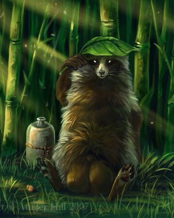
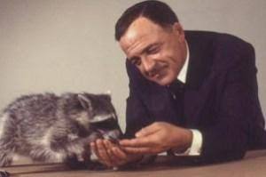

Mythology, Arts, and Entertainment
In the mythology of the indigenous peoples of the Americas, the raccoon is the subject of folk tales. Stories such as "How raccoons catch so many crayfish" from the Tuscarora centered on its skills at foraging. In other tales, the raccoon played the role of the trickster which outsmarts other animals, like coyotes and wolves. Among others, the Dakota Sioux believe the raccoon has natural spirit powers, since its mask resembled the facial paintings, two-fingered swashes of black and white, used during rituals to connect to spirit beings. The Aztecs linked supernatural abilities especially to females, whose commitment to their young was associated with the role of wise women in their society.
The raccoon also appears in Native American art across a wide geographic range. Petroglyphs with engraved raccoon tracks were found in Lewis Canyon, Texas; at the Crow Hollow petroglyph site in Grayson County, Kentucky; and in river drainages near Tularosa, the San Francisco River of New Mexico and Arizona. A true-to-detail figurine made of quartz, the Ohio Mound Builders' Stone Pipe, was found near the Scioto River. The meaning and significance of the Raccoon Priests Gorget, which features a stylized carving of a raccoon and was found at the Spiro Mounds, Oklahoma, remains unknown.
In Western culture, several autobiographical novels about living with a raccoon have been written, mostly for children. The best-known is Sterling North's Rascal, which recounts how he raised a kit during World War I. In recent years, anthropomorphic raccoons played main roles in the animated television series The Raccoons, the computer-animated film Over the Hedge, the live action film Guardians of the Galaxy (and the comics that it was based upon) and the video game series Sly Cooper.
Pet Raccoons
Raccoons are sometimes kept as pets, which is discouraged by many experts because the raccoon is not a domesticated species. Raccoons may act unpredictably and aggressively and it is extremely difficult to teach them to obey commands. In places where keeping raccoons as pets is not forbidden, such as in Wisconsin and other U.S. states, an exotic pet permit may be required. One notable raccoon pet was Rebecca, kept by US president Calvin Coolidge.
Their propensity for unruly behavior exceeds that of captive skunks, and they are even less trustworthy when allowed to roam freely. Because of their intelligence and nimble forelimbs, even inexperienced raccoons are easily capable of unscrewing jars, uncorking bottles and opening door latches, with more experienced specimens having been recorded to open door knobs. Sexually mature raccoons often show aggressive natural behaviors such as biting during the mating season. Neutering them at around five or six months of age decreases the chances of aggressive behavior developing. Raccoons can become obese and suffer from other disorders due to poor diet and lack of exercise. When fed with cat food over a long time period, raccoons can develop gout. With respect to the research results regarding their social behavior, it is now required by law in Austria and Germany to keep at least two individuals to prevent loneliness. Raccoons are usually kept in a pen (indoor or outdoor), also a legal requirement in Austria and Germany, rather than in the apartment where their natural curiosity may result in damage to property.
When orphaned, it is possible for kits to be rehabilitated and reintroduced to the wild. However, it is uncertain whether they readapt well to life in the wild. Feeding unweaned kits with cow's milk rather than a kitten replacement milk or a similar product can be dangerous to their health.